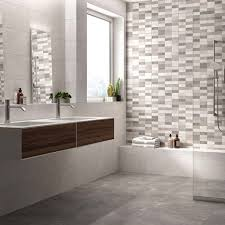

Nos réalisations



Pose, rénovation et créations sur mesure depuis plus de 15 ans.
Contactez-moiSol et mur, pour toutes les pièces de la maison : cuisine, salle de bain, terrasse...
Redonnez vie à vos intérieurs grâce à un travail soigné et durable.
Mosaïques, douches italiennes, motifs personnalisés – votre imagination devient réalité.
Fort de 15 ans d’expérience, Carrelage COT met son savoir-faire artisanal au service des particuliers et professionnels. Nous travaillons uniquement avec des matériaux de qualité pour un résultat durable, précis et esthétique.
📍 Cambon et alentours
📞 06 27 02 50 94
✉️ j-cot@wanadoo.fr